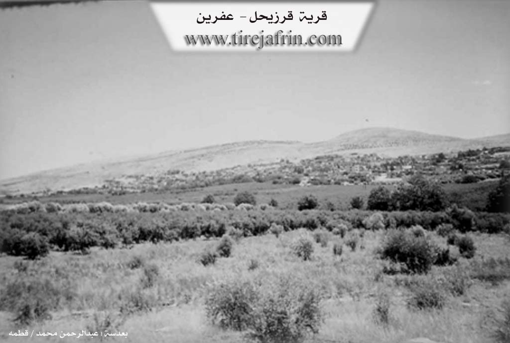
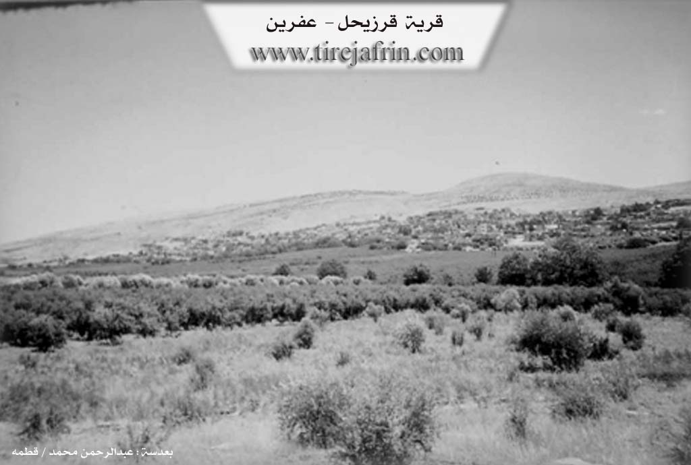

General Information
Nahiya (Subdistrict)
Efrîn
Also Known As
Karzêlê, Kurzêlê, Kurzêlê Cûmê, قرزيحل, كوزريله جيا, كورزيله جومه
Tribes
Andorê, Cewanê, Dilê, Elî, Ereb, Qopo, and Kotanê, Şêrînê
Families, Clans, etc.
Foundation Date
Size
Photos

 

Summaries
I. Summary from TirejAfrin Site of Kurzêlê (English)
According to the book: Afrin... Her River and Green Hills by Dr. Mohammed Abdo Ali (الدكتور محمد عبدو علي):
Kurzêlê Cûmê, قرزيحل /3611n - 485ha - 7km - 360m/:
- There are two opinions about the origin of the name. First: it says it is Syriac meaning "the creeping village". Second: what al-Khouri Barsoum (الخوري برصوم) says that it is Aramaic composed of two words: "Qour" meaning basically coldness, and it refers to the spring water found there, and "Zahel" from Zahal, meaning flowing or creeping, so this composition has the meaning of flowing spring /p.445/. There is a clear difference between the two opinions because they rely only on phonetic form, which weakens both. As for us, we did not reach the origin and meaning of the name in Kurdish, although the first part "Kur" means "bare, boy, son".
- One of the large villages in Afrin Region (م.عفرين). It is mentioned by Yaqut al-Hamawi (ياقوت الحموي) "died in 1229", and he wrote it as Qarzahel. It is located at the end of the western slope of Mount Lilon (جبل ليلون). It contains remains of church walls, cemeteries, wells carved in rock, massive limestone blocks, columns and scattered capitals within the village and around it, believed to date back to the Roman and Byzantine periods. Its inhabitants are among the most hardworking people. There was an important water spring next to the cemetery and shrine, but it dried up in recent years. Kurzil (كورزيل) was one of the flourishing villages in the early Roman then Byzantine period, and a monastic center, with inns, hotels, monastery for monks and worship columns.
According to the book: Afrin... Her River and Green Hills by writer Abdulrahman Mohammed (عبدالرحمن محمد) from Qatmah village (قرية قطمه)
Qarzihil (قرزيحل): A village in Juma plain (سهل جومة) and Afrin valley (وادي عفرين) belonging to the Central Villages District (ناحية قرى المركز) and Afrin Region (منطقة عفرين), Aleppo Governorate (محافظة حلب).
It is large, located east of a deep valley between two limestone grooved mountains: Mount Lilon (جبل ليلون) in its east and the other in its west. It is southeast of Afrin City (مدينة عفرين). A plain extends in its south. Its old buildings indicate ancient settlement evidenced by remains of church walls, cemeteries, wells carved in rock, massive limestone blocks, columns and scattered capitals within the village and around it dating to the Roman and Byzantine periods.
The number of its houses is approximately 600 houses and its age is approximately 700 years. It is bordered to the north by valley and Turindah village (قرية طورندة) and Arshqibar (عرشقيبار). To the south by a wide fertile plain planted with pomegranates, apples and vegetables and Basuta al-Siyahiya town (بلدة باسوطة السياحية). To the west by a mountain elevation and wide plain planted with pomegranates and Ain Dara village (قرية عين دارة) and the spring. To the east by a mountainous chain of Mount Lilon and Samaan (جبل ليلون وسمعان) and Deir Mashmash village (قرية دير مشمش), al-Khalidiya (الخالدية) and Ziriqat (زيريقات).
Electricity network and drinking water from artesian wells are available, and the paved road coming from Afrin leads to the village center. It has elementary and preparatory schools, modern municipality, telephone center, mosque. The village is surrounded on three sides by orchards planted with pomegranates, apples, cotton and other trees. Current village houses are modern, made of stone and cement, spread in an organized manner, each containing a garden planted with pomegranates, apples, peaches and mangoes. Its lands are fertile due to proximity to Afrin river (نهر عفرين) and Ain Dara spring (نبع عين دارة).
People drink from the public water network coming from Ain Dara spring (نبع عين دارة) located southwest of the village. It is considered one of the fertile and populated villages currently due to the abundance of orchards and working hands.
Among the families in the village: Al Naser/Shami (آل ناصر / شاميو), Al Kolbjek + Abdo (آل كلبجك + عبدو), Al Hamkaro (آل حمكرو), Al Ibo (Bilali) (آل ايبو( بلالي)), Al Biram/from Zoroastrian origins (آل بيرم / من أصول زرادشتية), Al Khoja and Osman/from al-Jazira (آل خوجة وعثمان / من الجزيرة), Al Borio/came from Aqiba (آل بوريو / قدموا من عقيبة), Soghanah (صوغانه), Kimar (كيمار), Al Owli + Hamo/came from Deir Mashmash (آل اولي + حمو / قدموا من ديرمشمش), Al Fio/Karsanah (آل فيو / كرسانه), Al Abdulrahman/Kafr Saghir (آل عبدالرحمن / كفر صغير), Al Kalo/Kimar (آل كالو / كيمار), Al Najjar/Abeen (آل نجار / ابين).
Village Mukhtar is the son of the previous Mukhtar from Osman family (عائلة عثمان): Fawzi Hassan Osman (فوزي حسن عثمان).
Highest scientific and cultural degrees obtained by village sons: Dr. Ahmed Mahmoud al-Khalil (الدكتور أحمد محمود الخليل) / PhD in Arabic Literature and he resides and teaches in universities of the United Arab Emirates - Jihad Ibo (جهاد ايبو) / PhD in Agricultural Engineering. In addition to many university degree holders.
Professor Yusuf Abdulrahman/Abu Habib (الأستاذ يوسف عبدالرحمن / أبو حبيب), who is now muezzin and preacher of the village mosque and Ramzi Kanjo/Abu Ziad (رمزي كنجو / أبو زياد) are considered beloved social personalities among village people for their humility and simplicity.
Mr. Mohammed Abdo/Abu Rizan (السيد محمد عبدو / أبو ريزان) is considered the first to practice beekeeping in the village.
Prepared and implemented by: Site manager of Afrin Heritage: Abdulrahman Haji Osman (عبدالرحمن حاجي عثمان)
20/12/2013
III. Summary from other Channels' Transcripts of Kurzêlê
C. Summary from Afrin 366 Transcript of Kurzêlê
The village of Karzêlê, located in the Afrin region and connected by road to the nearby village of Bosîtê, is a large community of approximately 700 houses. According to local memory, the people of Karzêlê are not poor but are known for their self-sufficiency, with a tradition of both men and women working their own land and property. The village is famous for its gardens, agriculture, and livestock. The social structure of Karzêlê is historically based on several clans (eşîr), including the Dilê, Cewanê, Şêrînê, Andorê, Elî, Ereb, Qopo, and Kotanê. One specific lineage mentioned is that of Ustad Abdo's wife, who was from the Şêrînê clan, which in turn originated from the Andorê clan. A distinct feature of the local dialect is the use of the word "helma" for pear (hirmî).
V. Links
- Tirejafrin:
http://www.tirejafrin.com/site/kura%20afrin%20markaz-%20kurzele.htm - Ax û Welat:
https://www.youtube.com/watch?v=A-KsS9hy1LU - Jawlat:
https://www.youtube.com/watch?v=60AKAH06kNg - Drone:
https://www.youtube.com/watch?v=OCbzbExWY_o - Video:
https://www.youtube.com/watch?v=HG_7p-QDApw
https://www.youtube.com/watch?v=vfx7aBlEjoY
https://www.youtube.com/watch?v=2lmgiZN2I0I